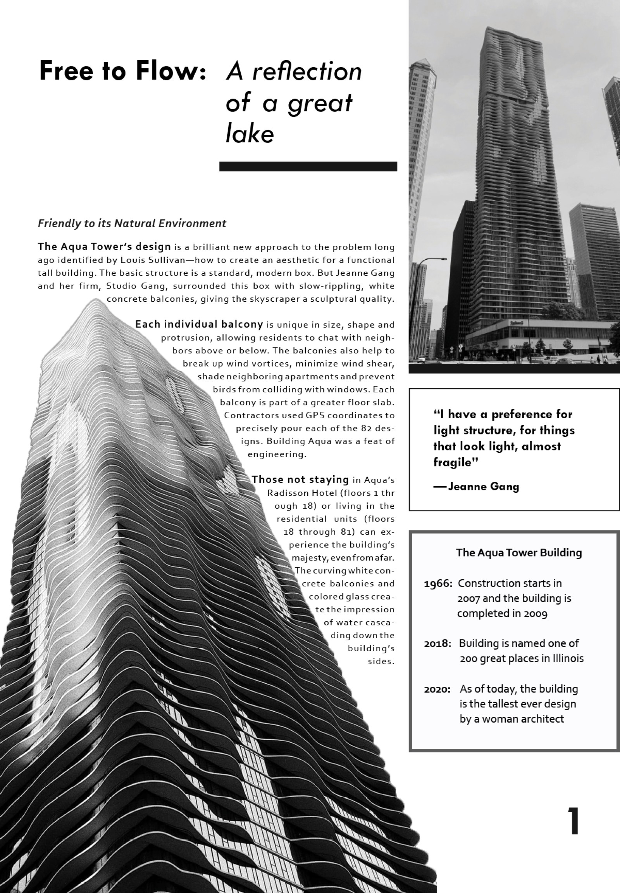
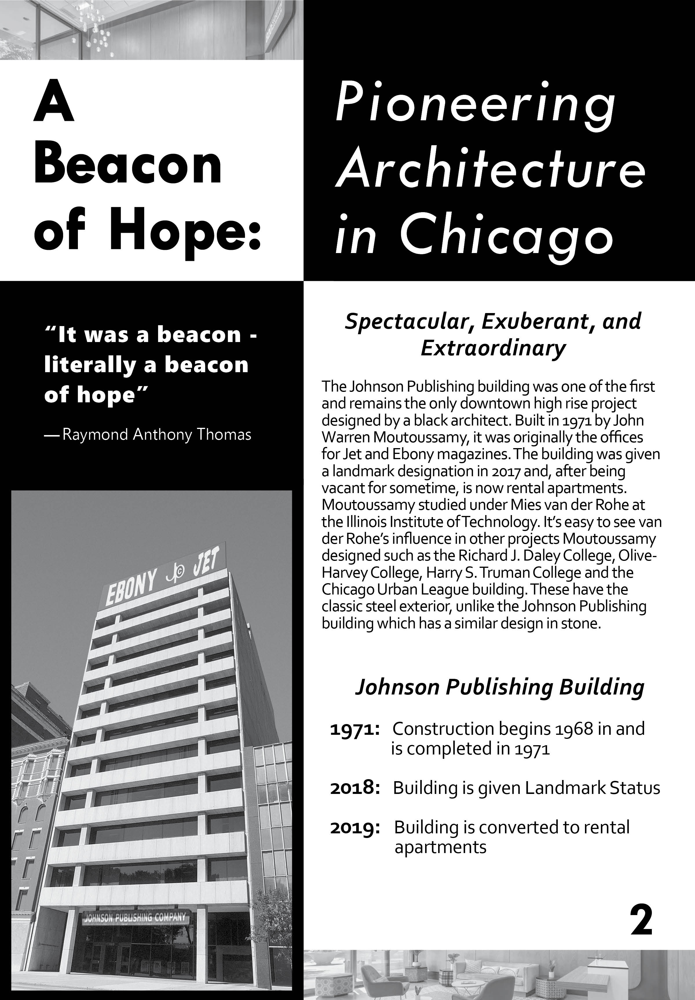
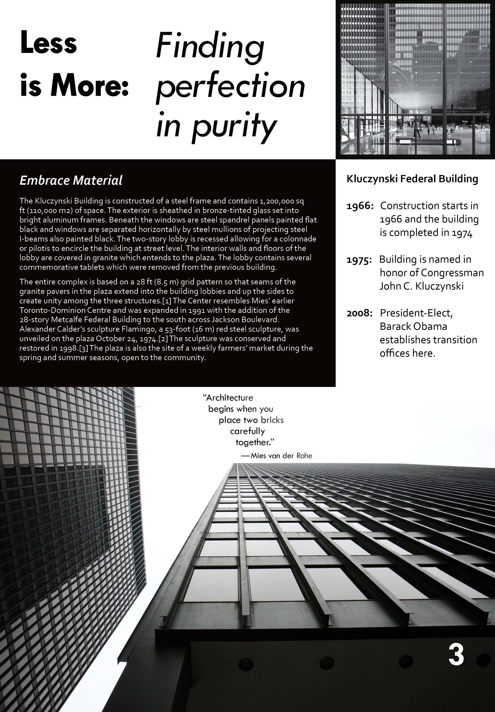

Graphic Design Class Work
Playtime (1967) review - publication design
"Playtime" is a creative and experiemental comedy film by Jacques Tati about the
future of technology and consumerism, set in Paris. These spreads I designed encorporate
a movie review of about 1,900 words and a variety of shots from the film.
Throughout the film, the audio is almost always distorted, loud when it shouldn't be or
too quiet to make out and layered on top of each other. The main character is wanders around the city and feels
disconnected from his environment. I wanted to capture this distortion of audio through
the typography through my choice in typefaces, scale, and layering of type with different colors.
Adobe InDesign & Photoshop
Biligual Hymn Book - print layout


In this project I realized how much I enjoy and appreciate the technical and detailed
aspects of graphic design work.
Adobe InDesign
Article Pages - Typography exercise

Image Dominant

Text Dominant

Balance
«
»
Adobe InDesign
Album Cover Concepts - Abstract Typography
Album Cover Concept Illustrations
This project was one of the first graphic design projects I worked on.
The first set of images in the slideshow was the first part to the final
project. This step I used the band name, "Trophy Eyes", and the name of
the album, "The American Dream", as the only type content for this exercise. The second
set of photos is the final concept for the
album cover front and back. Combining my bright and dynamic abstract photographs
was an interesting challenge to combine with the set of black and white cover concepts.
Adobe Illustrator & Photoshop
Digital Illustrations: Realism & Simplification
Adobe Illustrator